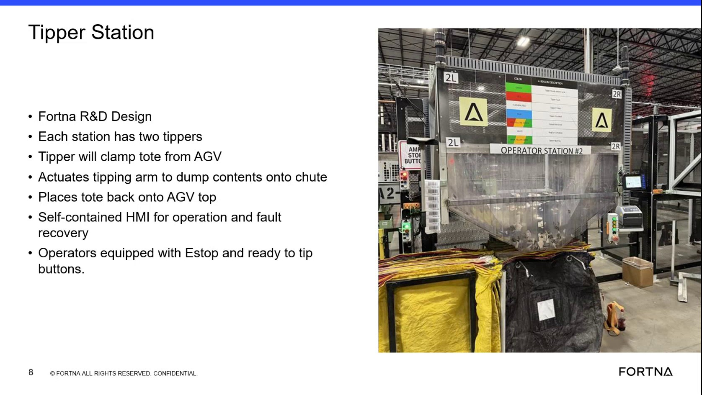

| Procedure ID | proc_operate_tipper_station_ready_to_tip_v1 |
|---|---|
| Title | Operate a Tipper Station using the self-contained tipper HMI (Ready to Tip) to dump tote contents to the chute |
| Procedure Type | operation |
| Primary Role | operator |
| Support Safe | Yes |
| Capability Tags | tipper_station_fault |
| Access Surface | tipper_hmi, physical_floor |
| Audience Roles | operator |
| Failure Pattern Tags | None |
| Validation Status | needs_sme_review |
| Merge Status | source_finalized |
At the operator station, use the self-contained tipper HMI to run a tip cycle: clamp the tote from the AGV, actuate the tipping arm to dump contents onto the chute, and place the tote back onto the AGV. Use the station’s operator E-stop and the “I’m ready to tip” button to initiate the cycle.
Use when a tote is presented to the tipper at an operator station and you need to perform the tip cycle (clamp → dump to chute → return tote to the AGV) using the station’s self-contained tipper HMI.

Responsible role: operator
Instruction:
At the operator station, identify the self-contained tipper HMI for that station.
Expected result:
You have located the station’s self-contained tipper HMI used for operation and fault recovery.
Responsible role: operator
Instruction:
Confirm the operator safety control is present/available on the station (E-stop).
Expected result:
The station’s operator E-stop is present/available for use.
Stop or Escalate If:
Responsible role: operator
Instruction:
Ensure a tote is presented to the tipper (tote coming in from the AGV) and that the station is set up for the tip cycle described (clamp tote, tip arm, dump to chute, then return tote).
Expected result:
A tote is at the station for tipping, and the station is ready to perform the clamp → dump → return sequence.
Responsible role: operator
Instruction:
On the tipper HMI, press the button that indicates you are ready to tip (“I’m ready to tip”).
Expected result:
The tip cycle is initiated from the tipper HMI using the “I’m ready to tip” button.
Responsible role: operator
Instruction:
Observe the tipper cycle behavior: the tipper clamps the tote from the AGV, actuates the tipping arm to dump contents onto the chute, and then places the tote back onto the AGV.
Expected result:
A successful tip cycle occurs: clamp tote from AGV → actuate tipping arm to dump contents onto chute → place tote back onto AGV.
Stop or Escalate If: